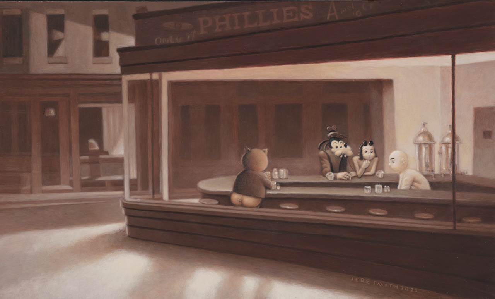
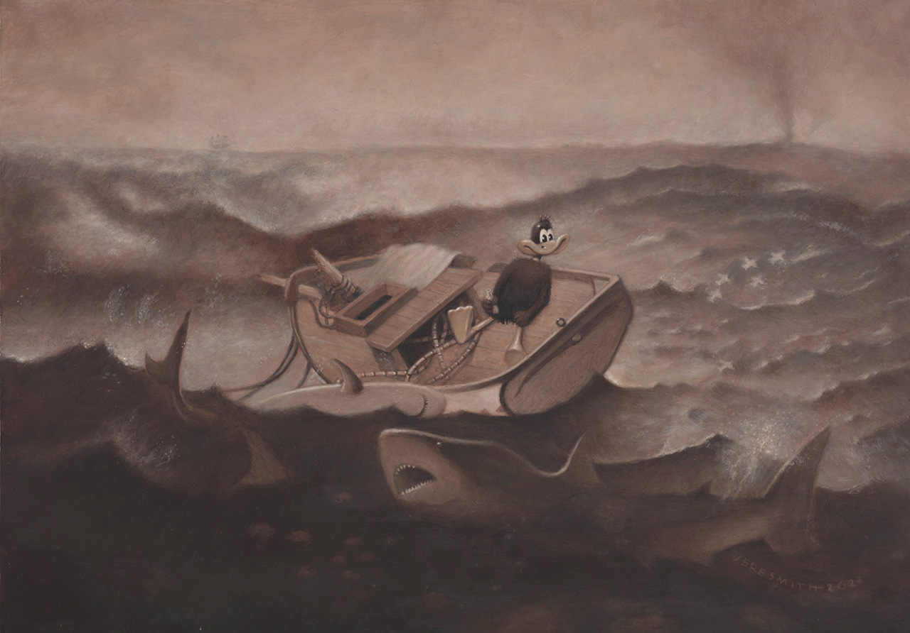
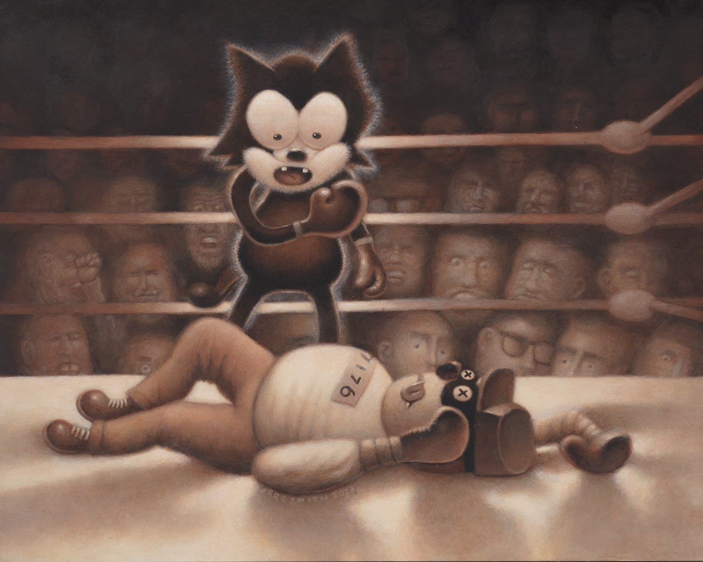
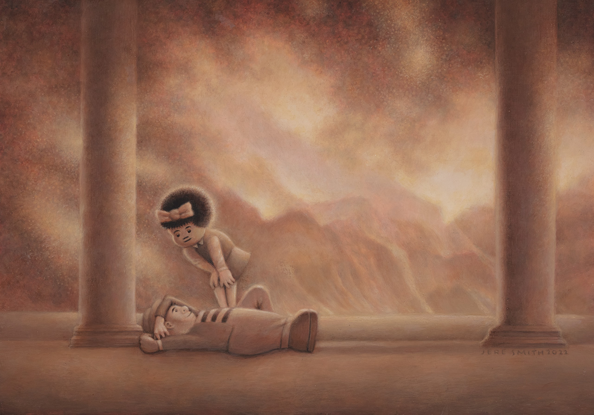
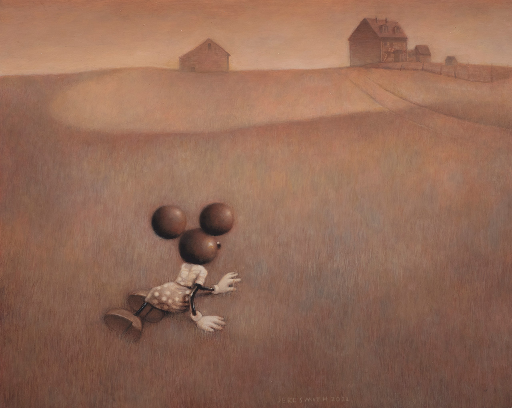
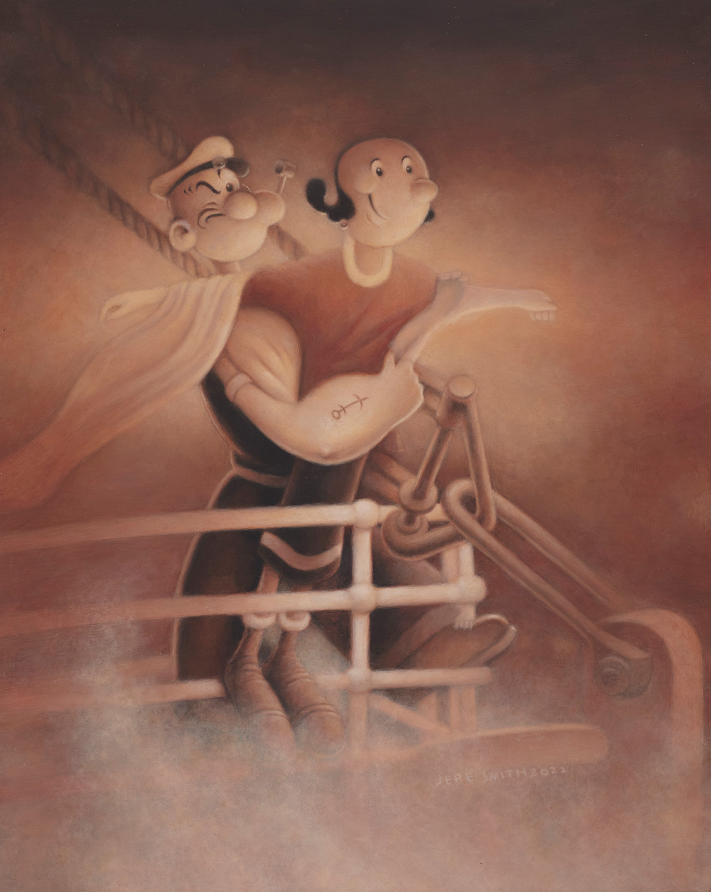
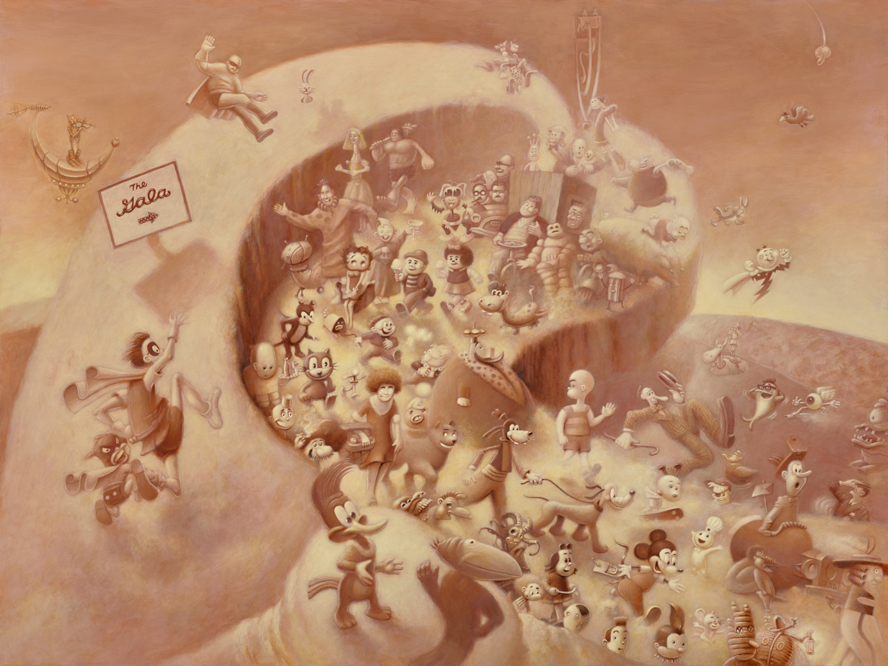
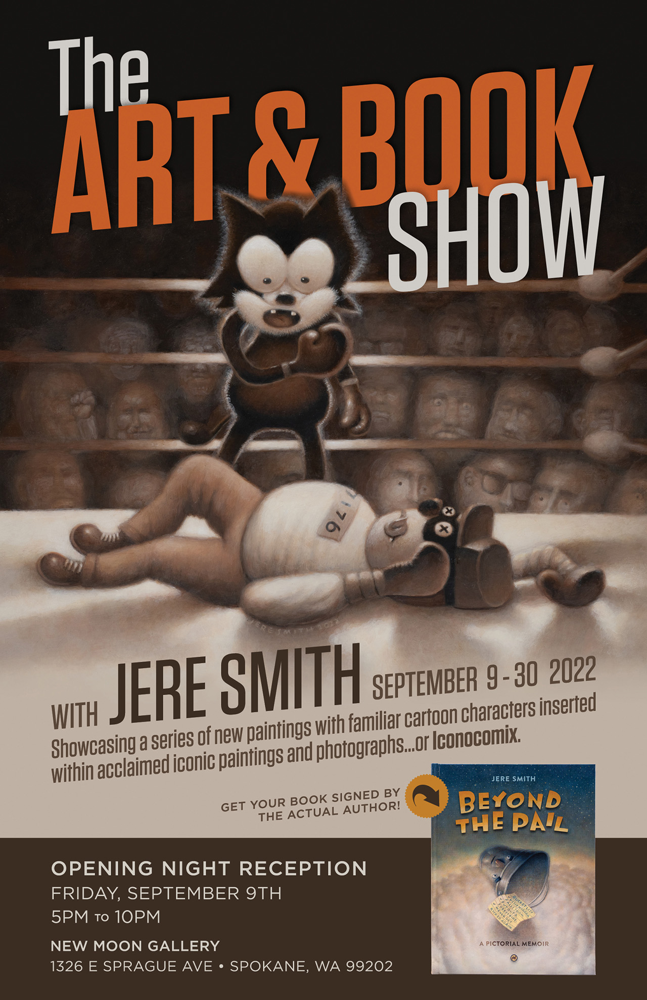

Cartoons & Comics
A series of paintings with familiar cartoon characters inserted within acclaimed iconic pantings and photogtaphs... or Iconocomix.
1. Nighthawks at Dinner16" x 20", Acrylic on Clayboard, 2022
2. Gulf Stream? (with Daffy Duck) 16" x 20", Acrylic on Clayboard, 2022
3. KO (with and Felix The Cat and a Beagle Boy) 16" x 20", Acrylic on Clayboard, 2022
4. Daybreak (With Nancy and Sluggo) 16" x 20", Acrylic on Clayboard, 2022
5. Minnie's World16" x 20", Acrylic on Clayboard, 2022
6. Titanic Love (with Popeye & Olive Oyl), 16" x 20", Acrylic on Clayboard, 2022
7. The Gala30" X 40", Acrylic on Clayboard, 2021
8. The Art & Book Show Poster